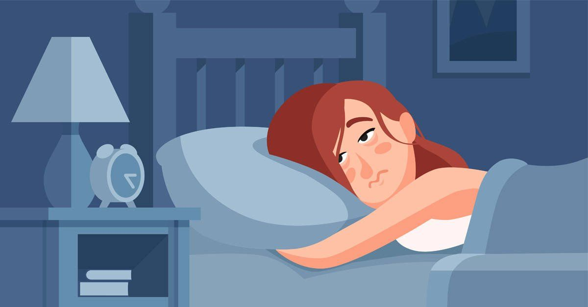
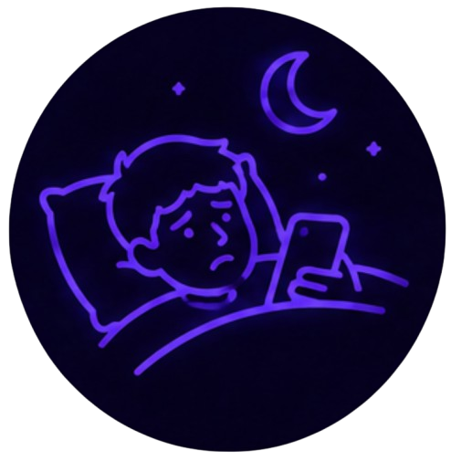
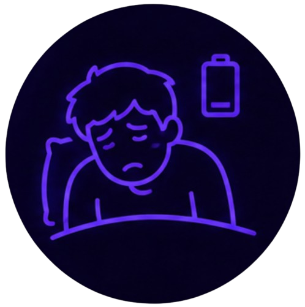
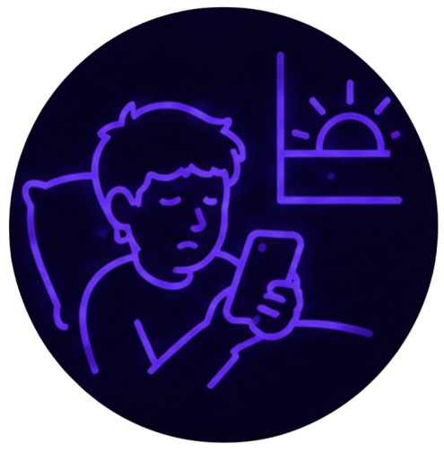

Problemas de sueño
Usar el celular justo antes de dormir es uno de los hábitos que más afecta la calidad del descanso. La luz azul de la pantalla retrasa la producción de melatonina (la hormona que te da sueño), y el contenido que consumes mantiene tu cerebro activo justo cuando debería estar relajándose.

Tip del día
Establece una "hora de apagado" para las pantallas. Deja de usar el celular al menos 30 minutos antes de acostarte. Usa ese tiempo para leer, escuchar música tranquila o simplemente descansar la vista.

Dificultad para conciliar el sueño
Te cuesta quedarte dormido después de usar el celular en la cama.
Dale la vueltaQué hacer
Activa el modo nocturno o filtro de luz azul en tu celular después de las 8pm, y evita contenido emocionante justo antes de dormir.

Perder la noción del tiempo
Empiezas a ver videos "solo un rato" y sin darte cuenta ya pasó una hora.
Dale la vueltaQué hacer
Pon una alarma de "hora de dejar el celular" además de la alarma para despertar. Cuando suene, cierra la app sin excepción.

Cansancio al despertar
A pesar de haber dormido suficientes horas, te levantas cansado y sin energía.
Dale la vueltaQué hacer
El descanso no solo depende de las horas dormidas, sino de la calidad del sueño. Reducir el uso del celular antes de dormir mejora esa calidad.

Revisar el celular de madrugada
Te despiertas en la noche y revisas el celular, interrumpiendo el ciclo de sueño.
Dale la vueltaQué hacer
Carga el celular fuera del alcance de la cama, usando un despertador aparte si lo necesitas para la alarma de la mañana.